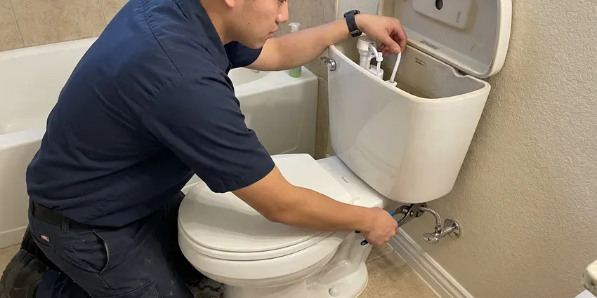
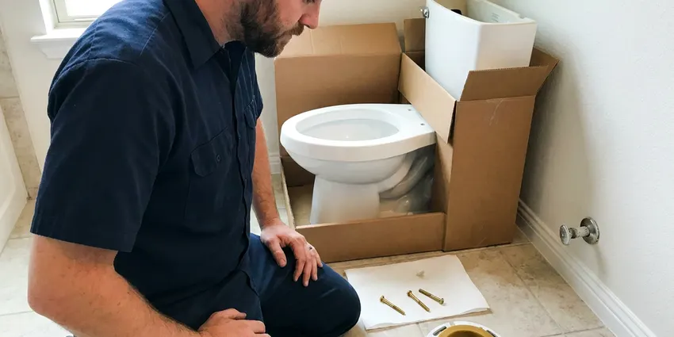
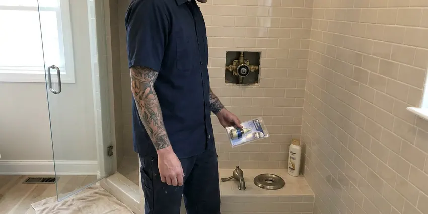
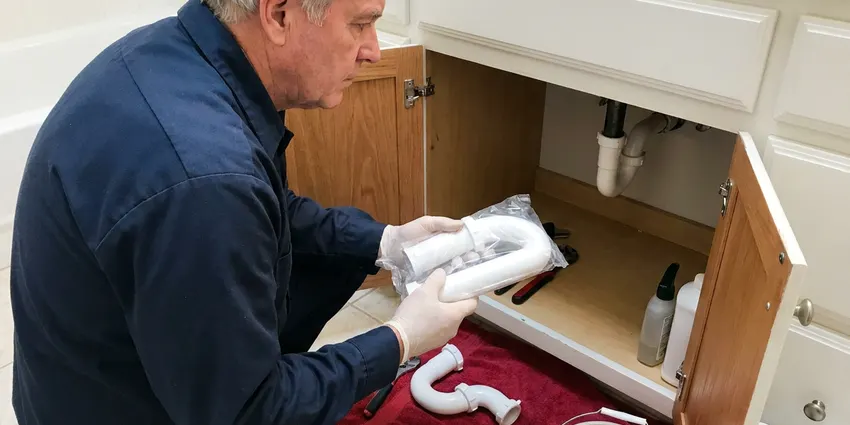

Faucet Repair in Little Elm, TX
Dealing with a leaky faucet in Little Elm, TX? We provide fast, reliable faucet repair to stop drips and restore your plumbing.
- Fast Local Service
- Expert Plumbers
- Drip-Free Guarantee
- All Faucet Types
Stop Leaks, Call for Faucet Repair in Little Elm, TX.
Don't let a small drip turn into a big problem. Contact DFJ Plumbing for immediate assistance.
Professional Faucet Repair Services in Little Elm, TX
When your faucet starts to leak, drip, or simply won't turn on or off, DFJ Plumbing is here to help. We specialize in all types of faucet repair in Little Elm, tackling everything from worn-out washers to complex cartridge replacements with precision and care.
Our expertise includes:
- Fixing drips and leaks on all faucet types.
- Repairing or replacing worn-out internal components.
- Restoring proper water flow and temperature control.

Additional Bathroom Plumbing Services in Little Elm, TX
From toilets to showers, our bathroom plumbing team in Little Elm, TX handles repairs, installs, and upgrades with tidy, code-compliant work.


Little Elm toilet repair specialists

Toilet Installation near Little Elm

Little Elm shower repair specialists

Customers
Why Choose DFJ Plumbing for Faucet Repair in Little Elm, TX?
A small faucet leak can waste significant water and increase your utility bills over time, especially with Texas's climate. Our repairs address the root cause, preventing further damage and conserving resources.
- Water Conservation, Stopping leaks saves hundreds of gallons of water per year, which is crucial in Texas's often dry conditions.
- Prevent Damage, Prompt repairs prevent water stains, mold growth, and cabinet damage under sinks.
- Cost Savings, Eliminating drips reduces your water bill and avoids more costly repairs down the line.
Citywide Coverage
DFJ Plumbing proudly serves every neighborhood across Little Elm, ensuring that no matter where you are, our expert plumbers are ready to provide reliable faucet repair. We understand the unique plumbing needs of homes throughout this area, from older established properties to new constructions.
Experienced Team
Our plumbing team brings years of specialized experience in faucet repair, understanding the intricacies of various brands and models common in Texas homes. They are continually trained on the latest repair techniques and equipped with the right tools for every job.
Safety-First Approach
We prioritize safety and code compliance in every faucet repair we undertake, ensuring all work meets local Little Elm and Texas plumbing regulations. Our repairs are not just about fixing the immediate issue, but also about maintaining the integrity and safety of your home's plumbing system.
Trusted Certified Little Elm Plumbing Services Professionals
At DFJ Plumbing, we take pride in providing licensed, certified plumbing services throughout Little Elm, TX. Backed by recognized industry credentials, our experienced plumbers combine technical skill with genuine customer care. Whether it is repair, installation, or maintenance, we follow strict safety and quality standards to deliver lasting results you can trust.
Call Us Now PHCC Plumbing Contractor Recognition
PHCC Plumbing Contractor Recognition Better Business Bureau (BBB) Accreditation
Better Business Bureau (BBB) Accreditation Angi Certified Pro
Angi Certified Pro ISO 9001 Quality Management Certification
ISO 9001 Quality Management CertificationDependable Faucet Repair Services in Little Elm, TX
Leaky Faucet Repair in Little Elm
A dripping faucet is more than just an annoyance, it's a waste of water and money. In Texas, where water conservation is always a concern, fixing a leak quickly is important. Our plumbers can identify the cause, whether it's a worn-out washer, O-ring, or a corroded valve, and replace the faulty components. We carry a wide range of common parts to ensure most leaky faucet repairs can be completed in a single visit, restoring your peace and quiet.

Cartridge Faucet Repair in Little Elm, TX
Many modern single-handle faucets, commonly found in newer Texas homes, use a cartridge system. When these fail, you might experience inconsistent water temperature, reduced flow, or difficulty turning the faucet on or off. Our technicians are experts at diagnosing cartridge issues and replacing them with the correct manufacturer-specific part, ensuring your faucet functions like new. We work with all major brands to provide precise repairs.
Compression Faucet Repair in Little Elm
Compression faucets, often found in older Little Elm homes, are known for their separate hot and cold handles. When these faucets leak, it's typically due to worn-out rubber washers or packing. Our team is skilled in disassembling these classic fixtures, replacing the necessary seals and washers, and reassembling them to stop leaks effectively. We respect the character of older homes and ensure these repairs are done carefully.
Ball Faucet Repair in Little Elm, TX
Ball faucets, recognizable by their single lever that moves over a rounded cap, are common in many Texas kitchens. They use a rotating ball joint to control water flow and temperature. If your ball faucet is leaking from the spout or base, or if the handle feels loose, it's likely time for a repair. We can replace the spring-loaded rubber seats and O-rings, which are usually the culprits, restoring smooth operation and preventing drips.
Disc Faucet Repair in Little Elm
Ceramic disc faucets are known for their durability and are a popular choice in many contemporary Little Elm bathrooms. While generally reliable, they can develop leaks if the ceramic discs become scratched or misaligned, or if the inlet and outlet seals wear out. Our plumbers have the expertise to carefully disassemble these precise mechanisms, clean or replace the ceramic discs, and reseal the faucet to eliminate leaks and restore optimal performance.
Commercial Faucet Repair in Little Elm, TX
DFJ Plumbing also provides robust commercial faucet repair services for businesses throughout Little Elm. High-traffic commercial faucets, from public restrooms to breakrooms, endure constant use and often require more durable parts and specialized repair techniques. We understand the urgency of commercial plumbing issues and offer prompt, efficient service to minimize disruption to your business operations and ensure compliance with health codes.
Emergency Faucet Repair in Little Elm
Sometimes, a faucet issue can't wait. A severely leaking or broken faucet can quickly cause significant water damage, especially if it's spraying uncontrollably. We offer emergency faucet repair services in Little Elm to address urgent situations promptly. Our team is equipped to respond quickly, mitigate damage, and provide immediate repairs to secure your property and prevent further water loss, even outside of regular business hours.

Specialty Faucet Repair in Little Elm, TX
Beyond standard kitchen and bathroom fixtures, we handle repairs for specialty faucets such as pot fillers, utility sink faucets, and outdoor spigots common in Texas homes. These often require specific tools and knowledge due to their unique designs and usage. Whether it's a garden hose bib that won't stop dripping or a filtered water faucet under your sink, DFJ Plumbing has the expertise to diagnose and repair it correctly.
Faucet Repair Near Me in Little Elm, TX
When you search for 'faucet repair near me' in Little Elm, you want a local, reliable plumbing company that understands the unique challenges of Texas's climate and water conditions. DFJ Plumbing is your trusted local expert, ready to provide prompt and professional service right where you are. We are committed to serving our community with integrity and skill.
Our team lives and works in the Little Elm area, giving us an intimate understanding of local plumbing systems and common faucet issues. This local presence means faster response times and a personalized approach to your faucet repair needs. You can count on us for dependable service that's always just a call away.
DFJ Plumbing at a Glance
- Fully licensed plumbing team covering Little Elm, TX
- Same-day appointments and 24/7 emergency response
- Upfront, flat-rate pricing before work begins
- 4.9-star rated by 812+ Texas customers
Little Elm Map
Little Elm Information
- Population
- 58,496
- Area codes
- Local
- Service area
- Little Elm and communities within 40 miles
- Nearby
- Frisco, Lewisville, Denton, Plano
Given Texas's hard water and fluctuating temperatures, proactive faucet repair in Little Elm is essential to prevent mineral buildup and extend the life of your plumbing fixtures, safeguarding your home from potential water damage.
Expert Services
Trust our professionals for reliable DFJ Plumbing solutions in Little Elm, TX.
Our Specialized Plumbing Services in Little Elm, TX
At DFJ Plumbing, we provide a complete range of plumbing services across Little Elm, TX. From leak detection to full system installations, our team ensures fast, precise, and affordable service for both residential and commercial properties. Explore our core services below:


How Our Faucet Repair Process Works in Little Elm, TX
We follow a straightforward approach to faucet repair, from initial contact to a fully functional, drip-free faucet.
Request a Quote
Call (737) 405-5978 or fill out our online form to schedule your faucet repair service. We'll gather some basic information about your issue and set up a convenient appointment time.
On-Site Diagnosis
A certified plumber will arrive at your Little Elm home, assess the faucet problem, and pinpoint the exact cause of the leak or malfunction. We'll explain the issue clearly.
Expert Repair
Once the diagnosis is complete and you approve the estimate, our plumber will perform the necessary repairs using quality parts and proven techniques to ensure a lasting fix.
Frequently Asked Questions About Faucet Repair in Little Elm
The cost of faucet repair in Little Elm can range from $120 to $350, depending on the type of faucet, the specific parts needed, and the complexity of the repair. A simple washer replacement will be on the lower end, while a cartridge replacement in a high-end faucet might be more. We provide a clear estimate before any work begins.
The most common signs include a persistent drip or leak, difficulty turning the handles, inconsistent water temperature, reduced water pressure from the faucet, or strange noises when operating it. Any of these could indicate internal component wear or damage requiring attention.
Our plumbers are experienced in repairing all major faucet brands commonly found in Texas homes, including Delta, Moen, Kohler, American Standard, Pfister, and many others. We keep a stock of universal and common brand-specific parts to expedite repairs.
Yes, DFJ Plumbing stands behind our work. We offer a warranty on both the parts we install and our labor for faucet repairs. Specific warranty details will be provided at the time of service, giving you peace of mind that your repair is covered.
Most standard faucet repairs, such as replacing a washer or cartridge, can be completed by an experienced plumber in about 30 minutes to an hour. More complex issues or specialty faucets might take longer, but we strive for efficient service to minimize disruption to your home in Little Elm.
Absolutely. A faucet dripping at just one drip per second can waste over 3,000 gallons of water per year. That's enough to take more than 180 showers! This continuous waste will definitely show up as an increase on your water bill, making prompt repair a good investment in Little Elm.
While some minor leaks, like a simple washer replacement on a compression faucet, can be a DIY project, most modern faucets involve specific tools and intricate parts like cartridges or ceramic discs. Incorrect repairs can lead to further damage, more significant leaks, or voiding warranties. It's often best to call a professional to ensure a proper and lasting fix.
Texas is known for its hard water, which contains high levels of minerals like calcium and magnesium. Over time, these minerals can build up inside your faucets, corroding internal parts, clogging aerators, and stiffening moving components. This often leads to leaks, reduced water pressure, and decreased faucet lifespan, making regular maintenance or timely repair crucial.
What People Are Saying About Our Plumbing Experts?

James P.
Our commercial plumbing system had a leak under the sink, and DFJ Plumbing handled it professionally. The plumbers arrived quickly and restored everything without disruption to our customers.
Commercial Plumbing · Little Elm, TX
Patricia H.
We had a slab leak that two other companies could not find. DFJ Plumbing located it in under an hour, explained our options, and the price matched the quote to the dollar.
Slab Leak Repair · Carrollton, TX
Laura S.
I scheduled a water heater replacement, and the team made the process smooth and affordable. The new unit works perfectly, and they cleaned up after completing the job.
Water Heater Replacement · Little Elm, TXRobert G.
The trenchless sewer replacement saved our front yard. They walked us through the camera inspection footage first so we knew exactly what we were paying for.
Sewer Line Replacement · Little Elm, TX
Mark T.
When our office needed drain cleaning, DFJ Plumbing provided quick, reliable service. The plumber arrived on time and made sure every drain flowed perfectly before leaving. Very satisfied.
Drain Cleaning · Frisco, TX
Emily R.
I called DFJ Plumbing for plumbing repair, and the technician was fast, polite, and thorough. They explained the problem clearly and fixed it the same day. I will definitely hire them again. Highly recommended!
Plumbing Repair · Plano, TX